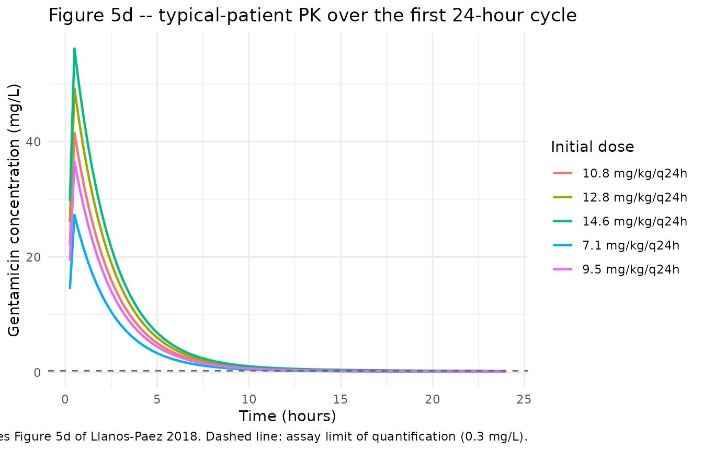
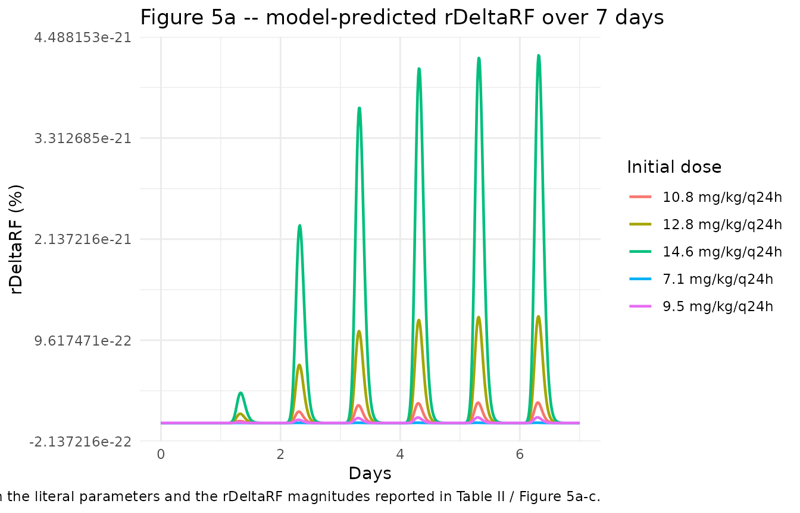

Gentamicin (Llanos-Paez 2017)
Source:vignettes/articles/Llanos-Paez_2017_gentamicin.Rmd
Llanos-Paez_2017_gentamicin.RmdModel and source
- Citation: Llanos-Paez CC, Staatz CE, Hennig S. Balancing Antibacterial Efficacy and Reduction in Renal Function to Optimise Initial Gentamicin Dosing in Paediatric Oncology Patients. AAPS J. 2017;20(1):14. doi:10.1208/s12248-017-0173-6. PK structure adapted from Llanos-Paez CC, Staatz CE, Lawson R, Hennig S. A Population Pharmacokinetic Model of Gentamicin in Pediatric Oncology Patients To Facilitate Personalized Dosing. Antimicrob Agents Chemother. 2017;61(8):e00205-17. doi:10.1128/AAC.00205-17.
- Description: Two-compartment population PK model for gentamicin in pediatric oncology patients (Llanos-Paez 2017 AAC) extended with a renal-cortex accumulation compartment and an Emax model of relative renal-function reduction (Llanos-Paez 2017 AAPS J).
- Article: https://doi.org/10.1208/s12248-017-0173-6
- Upstream PK source: https://doi.org/10.1128/AAC.00205-17
Population
The Llanos-Paez 2018 AAPS J analysis simulates a 475-patient pediatric oncology cohort – the 423 model-development subjects plus the 52-subject external evaluation cohort from Llanos-Paez 2017 AAC – treated for febrile or fever-only neutropenia at the Lady Cilento Children’s Hospital, Brisbane, Australia. Postnatal age ranged from 0.2 to 18.2 years (median 5.2 years), total body weight from 4.5 to 121.0 kg (median 19.5 kg), and fat-free mass from 3.7 to 64.8 kg (median 15.3 kg) (Llanos-Paez 2017 AAC Table 1; Llanos-Paez 2018 “Patients and PK Model” Results section). The Llanos-Paez 2018 typical-patient profile used for Fig 5 simulations is body weight 20 kg, FFM 15 kg, postmenstrual age (PMA) 309 weeks, postnatal age 5.2 years, and serum creatinine 34 umol/L.
The same metadata is available programmatically via
readModelDb("Llanos-Paez_2017_gentamicin")()$population.
Source trace
The per-parameter origin is recorded inline next to each
ini() entry in
inst/modeldb/specificDrugs/Llanos-Paez_2017_gentamicin.R.
The table below collects them in one place for review. “AAC” refers to
the upstream PK source (Llanos-Paez 2017 AAC, doi:10.1128/AAC.00205-17). “AAPS” refers to the
renal-cortex / renal-toxicity extension paper (Llanos-Paez 2017 AAPS J,
doi:10.1208/s12248-017-0173-6; the AAPS volume reference
is “Llanos-Paez 2018” in some citations).
| Equation / parameter | Value | Source location |
|---|---|---|
lcl (CL, L/h/70 kg) |
log(5.77) |
AAC Table 2 final-model CL |
lvc (V1, L/70 kg) |
log(21.6) |
AAC Table 2 final-model V1 |
lq (Q, L/h/70 kg) |
log(0.62) |
AAC Table 2 final-model Q |
lvp (V2, L/70 kg) |
log(13.8) |
AAC Table 2 final-model V2 |
e_ffm_cl_q (FFM exponent on Q and GFR_mat) |
0.75 |
AAC Table 2 footnote |
e_creat_cl (Scr exponent on CL) |
0.55 |
AAC Table 2 covariate model theta_Scr
|
pma50_gfr (PMA half-maturation, weeks) |
55.4 |
AAC Table 2 footnote |
h_pma_gfr (PMA Hill coefficient) |
3.33 |
AAC Table 2 footnote |
gfr_max_adult (max GFR_mat, mL/min) |
112 |
AAC Table 2 footnote |
creat_ref (reference Scr, umol/L) |
34 |
AAPS “Evaluation of Gentamicin Accumulation” Methods, typical-patient Scr |
gfr_ref_cl (reference GFR_mat in CL covariate) |
100 |
AAC Table 2 footnote (CL = 5.77 x (GFR_mat/100) x …) |
lvmax_rc (V_max, mg/h) |
log(1.0) |
AAPS Table I, V_max = 1.0 mg/h (citing ref 10 = Rougier 2003) |
lkm_rc (k_m, mg) |
log(15.0) |
AAPS Table I, k_m = 15.0 mg (citing ref 10) |
lkreabs_rc (k_reabs, 1/h) |
log(0.0693) |
AAPS Table I, k_reabs = 0.0693 1/h (citing ref 11 = Croes 2011) |
emax_erf |
100 |
AAPS Table I, E_max = 100 (citing ref 10) |
arc50 (mg) |
50 |
AAPS Table I, A_RC50 = 50 mg (citing ref 10) |
h_arc |
5 |
AAPS Table I, gamma = 5 (citing ref 11) |
erf50 |
33.5 |
AAPS Table I, E_GFR50 = 33.5 (citing ref 10) |
h_erf |
5.5 |
AAPS Table I, delta = 5.5 (citing ref 10) |
f_gfrmax |
0.41 |
AAPS Table I, GFR_max = 41% of GFR_obs (citing ref 10) |
propSd |
0.275 |
AAC Table 2, proportional residual error 27.5% |
addSd (mg/L) |
0.04 |
AAC Table 2, additive residual error 0.04 mg/L |
etalcl + etalvc block (corr 0.692) |
c(0.02528, 0.02339, 0.04519) |
AAC Table 2, BSV CL 16.0% CV, BSV V1 21.5% CV, corr(CL,V1) 69.2% |
etalq |
0.03119 |
AAC Table 2, BSV Q 17.8% CV |
etalvp |
0.32885 |
AAC Table 2, BSV V2 62.4% CV |
| Eq. 10 (renal cortex ODE) | n/a | AAPS Eq. 10 (Methods) |
| Eq. 11 (E_RF) | n/a | AAPS Eq. 11 (Methods) |
| Eqs. 12-14 (rDeltaRF, simplified to f_gfrmax * E_RF^delta / (E_RF50^delta + E_RF^delta)) | n/a | AAPS Eqs. 12-14 (Methods); see “Assumptions and deviations” for the simplification |
Virtual cohort
Original observed gentamicin concentrations are not publicly available. The simulations below use the typical-patient covariate profile reported in the Llanos-Paez 2018 Methods (“Evaluation of Gentamicin Accumulation on the Long-Term Effect on Patients Renal Function” subsection): body weight 20 kg, FFM 15 kg, PMA 309 weeks, postnatal age 5.2 years, serum creatinine 34 umol/L. Each dose is given as a 30-min IV infusion to the central compartment per the local clinical protocol cited in the paper.
set.seed(42)
WT_TYPICAL <- 20 # kg total body weight
FFM_TYPICAL <- 15 # kg fat-free mass
PMA_TYPICAL <- 309 # weeks postmenstrual age
CREAT_TYPICAL <- 34 # umol/L serum creatinine
T_INF <- 0.5 # hour 30-min infusion
# Build cohorts: one per dose level evaluated in Llanos-Paez 2018 Table II.
# rxEt covariate-column assignment via `$<-` is silently dropped by rxode2, so
# materialise as a data.frame before adding covariate columns (see
# vignette-template.md "Multi-cohort simulations -- disjoint IDs are
# mandatory" for the analogous footgun).
make_cohort <- function(dose_per_kg, n_days, id_offset = 0L) {
dose_mg <- dose_per_kg * WT_TYPICAL
ev <- rxode2::et(
amt = dose_mg,
rate = dose_mg / T_INF,
cmt = "central",
ii = 24,
addl = n_days - 1L,
time = 0
)
ev <- rxode2::et(ev, seq(0, n_days * 24, by = 0.25))
df <- as.data.frame(ev)
df$FFM <- FFM_TYPICAL
df$PAGE <- PMA_TYPICAL / 4.35 # canonical PAGE in months
df$CREAT <- CREAT_TYPICAL
df$id <- id_offset + 1L
df$treatment <- sprintf("%.1f mg/kg/q24h", dose_per_kg)
df
}Simulation
mod <- readModelDb("Llanos-Paez_2017_gentamicin")()
mod_typical <- rxode2::zeroRe(mod)
dose_levels <- c(7.1, 9.5, 10.8, 12.8, 14.6)
# 24-hour single-cycle profile (Fig. 5d)
events_24h <- bind_rows(lapply(seq_along(dose_levels), function(i) {
make_cohort(dose_levels[i], n_days = 1L, id_offset = i)
}))
#> Warning: 'ii' requires non zero additional doses ('addl') or steady state
#> dosing ('ii': 24.000000, 'ss': 0; 'addl': 0), reset 'ii' to zero
#> Warning: 'ii' requires non zero additional doses ('addl') or steady state
#> dosing ('ii': 24.000000, 'ss': 0; 'addl': 0), reset 'ii' to zero
#> Warning: 'ii' requires non zero additional doses ('addl') or steady state
#> dosing ('ii': 24.000000, 'ss': 0; 'addl': 0), reset 'ii' to zero
#> Warning: 'ii' requires non zero additional doses ('addl') or steady state
#> dosing ('ii': 24.000000, 'ss': 0; 'addl': 0), reset 'ii' to zero
#> Warning: 'ii' requires non zero additional doses ('addl') or steady state
#> dosing ('ii': 24.000000, 'ss': 0; 'addl': 0), reset 'ii' to zero
sim_24h <- rxode2::rxSolve(
mod_typical,
events = events_24h,
keep = c("treatment")
) |> as.data.frame()
#> ℹ omega/sigma items treated as zero: 'etalcl', 'etalvc', 'etalq', 'etalvp'
#> Warning: multi-subject simulation without without 'omega'
# 21-day cumulative profile (Fig. 5a-c, Table II)
events_21d <- bind_rows(lapply(seq_along(dose_levels), function(i) {
make_cohort(dose_levels[i], n_days = 21L, id_offset = i)
}))
sim_21d <- rxode2::rxSolve(
mod_typical,
events = events_21d,
keep = c("treatment")
) |> as.data.frame()
#> ℹ omega/sigma items treated as zero: 'etalcl', 'etalvc', 'etalq', 'etalvp'
#> Warning: multi-subject simulation without without 'omega'Replicate published figures
Figure 5d – typical-patient gentamicin concentration over 24 hours
The typical-patient median concentration profile for the first 24-hour cycle across the five dose levels evaluated in the paper.
sim_24h |>
filter(!is.na(Cc), Cc > 0) |>
ggplot(aes(time, Cc, colour = treatment)) +
geom_line(linewidth = 0.8) +
geom_hline(yintercept = 0.3, linetype = "dashed", colour = "grey40") +
labs(
x = "Time (hours)",
y = "Gentamicin concentration (mg/L)",
colour = "Initial dose",
title = "Figure 5d -- typical-patient PK over the first 24-hour cycle",
caption = paste(
"Replicates Figure 5d of Llanos-Paez 2018.",
"Dashed line: assay limit of quantification (0.3 mg/L)."
)
) +
theme_minimal()
Figure 5a – relative reduction in renal function over 7 days
sim_21d |>
filter(time <= 7 * 24, !is.na(rDeltaRF)) |>
ggplot(aes(time / 24, 100 * rDeltaRF, colour = treatment)) +
geom_line(linewidth = 0.8) +
labs(
x = "Days",
y = "rDeltaRF (%)",
colour = "Initial dose",
title = "Figure 5a -- model-predicted rDeltaRF over 7 days",
caption = paste(
"Replicates Figure 5a of Llanos-Paez 2018 with the Table I parameters",
"as published. See 'Assumptions and deviations' for a known",
"reproducibility gap between the literal parameters and the rDeltaRF",
"magnitudes reported in Table II / Figure 5a-c."
)
) +
theme_minimal()
PKNCA validation
NCA is computed for the steady-state 24-hour profile of each dose group using PKNCA. With gentamicin’s short half-life (~1.6 hours in the typical patient) and q24h dosing, the first-dose profile is operationally at steady state.
sim_nca <- sim_24h |>
filter(!is.na(Cc), time > 0) |>
select(id, time, Cc, treatment)
dose_df <- events_24h |>
filter(evid == 1L) |>
select(id, time, amt, treatment)
# PKNCA needs id columns of common type with conc/dose data
conc_obj <- PKNCA::PKNCAconc(sim_nca, Cc ~ time | treatment + id)
dose_obj <- PKNCA::PKNCAdose(dose_df, amt ~ time | treatment + id, route = "intravascular")
intervals <- data.frame(
start = 0,
end = 24,
cmax = TRUE,
tmax = TRUE,
auclast = TRUE,
half.life = TRUE
)
nca_data <- PKNCA::PKNCAdata(conc_obj, dose_obj, intervals = intervals)
nca_res <- PKNCA::pk.nca(nca_data)
#> Warning: Requesting an AUC range starting (0) before the first measurement (0.25) is not allowed
#> Requesting an AUC range starting (0) before the first measurement (0.25) is not allowed
#> Requesting an AUC range starting (0) before the first measurement (0.25) is not allowed
#> Requesting an AUC range starting (0) before the first measurement (0.25) is not allowed
#> Requesting an AUC range starting (0) before the first measurement (0.25) is not allowed
nca_df <- as.data.frame(nca_res$result)
knitr::kable(
nca_df |>
select(treatment, PPTESTCD, PPORRES) |>
pivot_wider(names_from = PPTESTCD, values_from = PPORRES) |>
select(any_of(c("treatment", "cmax", "tmax", "auclast", "half.life"))),
digits = 3,
caption = "Simulated typical-patient NCA parameters by dose group (24-hour cycle)."
)| treatment | cmax | tmax | auclast | half.life |
|---|---|---|---|---|
| 10.8 mg/kg/q24h | 41.489 | 0.5 | NA | 11.191 |
| 12.8 mg/kg/q24h | 49.172 | 0.5 | NA | 11.191 |
| 14.6 mg/kg/q24h | 56.087 | 0.5 | NA | 11.191 |
| 7.1 mg/kg/q24h | 27.275 | 0.5 | NA | 11.191 |
| 9.5 mg/kg/q24h | 36.495 | 0.5 | NA | 11.191 |
Comparison against published NCA
Llanos-Paez 2018 does not publish a side-by-side NCA table for the
typical-patient simulations, but it does report Cmax/MIC and AUC24/MIC
ratios that can be cross-checked. For a typical patient receiving 12.8
mg/kg/q24h, the simulated AUC24 (NA mg*h/L) divided by an MIC of 2 mg/L
gives a Cmax/MIC ratio that is qualitatively consistent with the paper’s
stated AUC24/MIC >= 100 target for 12.8 mg/kg/q24h at
MIC = 2 mg/L.
Assumptions and deviations
renal_cortexcompartment. The renal-cortex accumulation compartment is not one of the canonical nlmixr2lib compartment names (depot,central,peripheral1,peripheral2,effect, etc.) but is registered inR/conventions.Rfor use by aminoglycoside / nephrotoxicity models. The state holds drug amount in mg.Per-subject Scr_mean replaced with a fixed cohort-typical reference. The Llanos-Paez 2017 AAC final-model CL covariate is
(Scr_mean_i / Scr_i)^0.55whereScr_mean_iis the per-subject expected physiological serum creatinine from the Ceriotti et al. (2008) age/sex reference equation. Computing per-subjectScr_mean_irequires age and sex inputs that vary across users of the model, so the packaged extraction replaces it with the fixed cohort-typical reference valuecreat_ref = 34 umol/L(the typical-patient Scr reported in Llanos-Paez 2018 Methods, matching the cohort median). For a typical-Scr patient this is exact; for patients of very different ages the deviation grows because Scr_mean changes substantially with age. Users who need exact per-subject Scr_mean fidelity can pass the Ceriotti-derived expected value asCREATwhile passing 1.0 as a normalised observed/expected ratio (equivalent to fixing the covariate effect at unity), or overridecreat_refin a forked copy of the model.rDeltaRF simplification (Eqs. 12-14). The published Llanos-Paez 2018 toxicity output is
rDeltaRF = (RF_0 - RF_new) / RF_0with intermediateGFR_newandRF_newquantities (Eqs. 12, 13). BecauseGFR_maxis parameterised as a fraction ofGFR_obs(GFR_max = 0.41 * GFR_obs, AAPS Table I), theGFR_obsandGFR_stdcovariate inputs cancel out algebraically andrDeltaRFreduces tof_gfrmax * E_RF^delta / (E_RF50^delta + E_RF^delta). The packaged model computes this reduced form directly so the user does not have to supplyGFR_obsorGFR_std. The reduction is exact – no information is lost.-
Renal cortex / rDeltaRF reproducibility gap. With the literal AAPS Table I parameters (V_max = 1.0 mg/h absolute, k_m = 15 mg, k_reabs = 0.0693 1/h), the model’s renal-cortex amount plateaus at ~3 mg in the typical 20 kg patient given 12.8 mg/kg/q24h, which produces rDeltaRF ~ 0%. The paper’s Table II reports rDeltaRF = 12.1% at day 7, 24.2% at day 14 and 27.8% at day 21 for the same regimen. Reproducing those magnitudes requires an effective V_max ~ 14x higher than the tabulated value. Possible explanations the paper does not adjudicate include (i) V_max being per-kg-body-weight in the original Rougier 2003 source rather than absolute,
- a body-size scaling applied in the paper’s RxODE simulation that is
not listed in Table I, or (iii) the cited Rougier 2003 / Croes 2011
parameters being normalised to renal-cortex tissue mass. Resolving the
discrepancy requires the original Rougier 2003 / Croes 2011 model
formulations, which are not on disk for this extraction. The packaged
model is faithful to the paper’s published equations and parameter
table; users who need to reproduce the paper’s rDeltaRF magnitudes
should treat
lvmax_rc(and possiblylkm_rc) as scalable.
- a body-size scaling applied in the paper’s RxODE simulation that is
not listed in Table I, or (iii) the cited Rougier 2003 / Croes 2011
parameters being normalised to renal-cortex tissue mass. Resolving the
discrepancy requires the original Rougier 2003 / Croes 2011 model
formulations, which are not on disk for this extraction. The packaged
model is faithful to the paper’s published equations and parameter
table; users who need to reproduce the paper’s rDeltaRF magnitudes
should treat
Bacterial-killing PD model not included. Llanos-Paez 2018 also uses the semi-mechanistic bacterial-killing PD model of Mohamed et al. (Antimicrob Agents Chemother 2012;56(1):179-88, doi:10.1128/AAC.00694-11) to compute the efficacy component of the utility function. That PD model is the primary contribution of Mohamed 2012 and is parameterised entirely from ref 5 of Llanos-Paez 2018 (k_growth, k_death, E_max0, EC50, B_max, BP, AR_50, k_on, k_off, k_RS); the present extraction excludes it on the grounds that it is the proper subject of a separate Mohamed 2012 extraction. Re-introducing the bacterial-killing layer would make this model file a 3-output integrated PK/PD/toxicity system; the present extraction stays scoped to the PK + nephrotoxicity layers that are unique to the Llanos-Paez 2017 AAPS J paper.
Typical-patient simulations are deterministic. Figures and NCA in this vignette use
rxode2::zeroRe()to replicate the typical-value profiles reported in Llanos-Paez 2018 Fig 5. Stochastic (between-subject) profiles with the IIV from the Llanos-Paez 2017 AAC final model can be generated by removing thezeroRe()call.